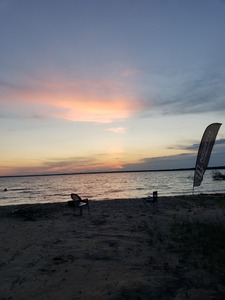
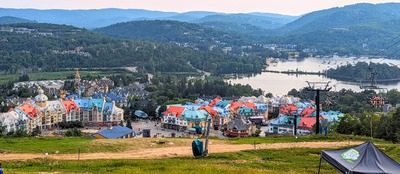
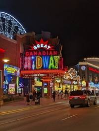
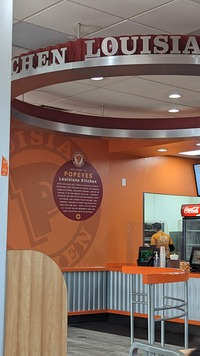
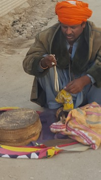

I am a freshman studying Cybersecurity and Applied IT. I have been coding since high school, and hope to sharpen my skills in the computer science field. I like to listen to a mix of different genres of music. I also like to do anything artsy.
Likes:
Painting
Drawing
Knitting
Sewing
Crocheting
Cooking
Reading
Design
Jewelry
Origami
Dislikes:
Little Dogs
Small Spaces
Heights
Bugs
Unflavored/Unseasoned Food
*Fun Fact*
I have a jewelry business and I play badminton. My family drove all the way to Canada for some Popeyes because it is only halal there
~Not so Fun Fact~
I cannot swim.
Places Ive Been to:

I went to Michigan.

My cousins live in Canada, so with the help of them, I went to Quebec, where they mainly speak French.

We went to Niagra Falls and enjoyed the tourist traps.

Me and my family frequents Canada and Michigan just for halal food. Our favorite food chain is easily Popeyes.

Both of my parents are from Pakistan, and I spent a lot of my life there. I rode a camel, a donkey, and a dune buggy. Snake charmers were also suprisingly common, as well as pet monkeys.